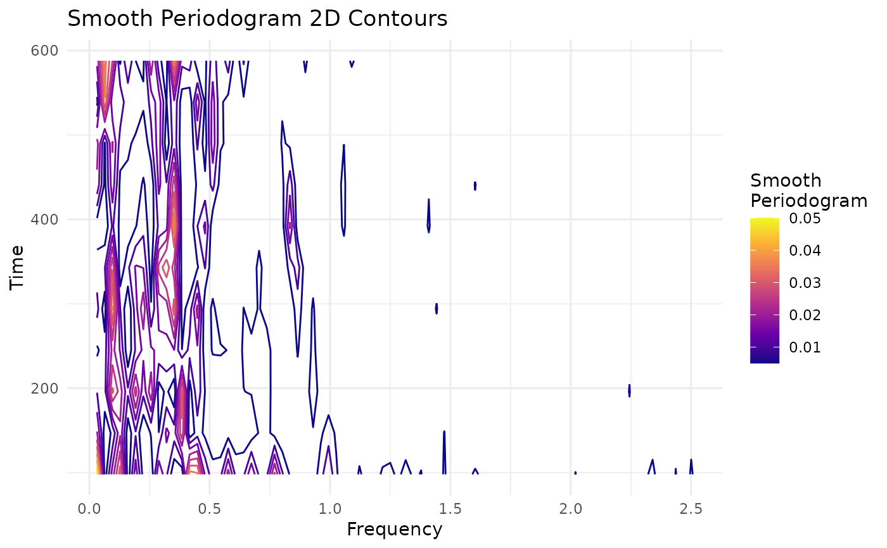

Plots the contour plot of the smoothing periodogram of a time series, by blocks or windows.
block_smooth_periodogram( y, x = NULL, w = NULL, s = NULL, p = 0.25, spar_freq = 0, spar_time = 0 )
| y | (type: numeric) data vector |
|---|---|
| x | (type: numeric) optional vector, if |
| w | (type: numeric) value corresponding to the length of the window to
compute periodogram.
If |
| s | (type: numeric) value corresponding to the lag with which will be taking the blocks or windows to calculate the periodogram. |
| p | (type: numeric) value used if it is desired that |
| spar_freq | (type: numeric) smoothing parameter, typically (but not necessarily) in \((0,1]\). |
| spar_time | (type: numeric) smoothing parameter, typically (but not necessarily) in \((0,1]\). |
A ggplot object
The number of windows of the function is \(m = \text{trunc}((n-w)/s+1)\),
where trunc truncates de entered value and n is
the length of the vector y. All windows are of the same length
w, if this value isn't entered by user then is computed as
\(w=\text{trunc}(n^{0.8})\) (Dahlhaus).
lsts2_spb computes the periodogram in each of the
M windows and then smoothes it two times with
smooth.spline function; the first time using
spar_freq parameter and the second time with spar_time. These
windows overlap between them.
For more information on theoretical foundations and estimation methods see
Dahlhaus R, others (1997). “Fitting time series models to nonstationary processes.” The annals of Statistics, 25(1), 1--37.
Dahlhaus R, Giraitis L (1998). “On the optimal segment length for parameter estimates for locally stationary time series.” Journal of Time Series Analysis, 19(6), 629--655.
block_smooth_periodogram(malleco)